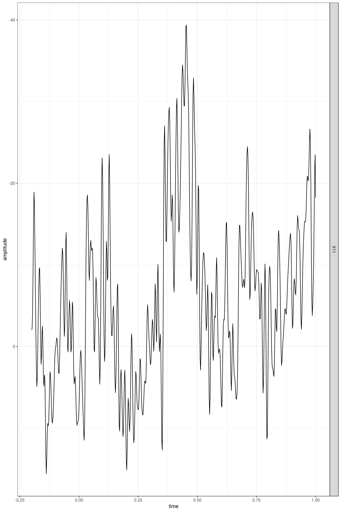
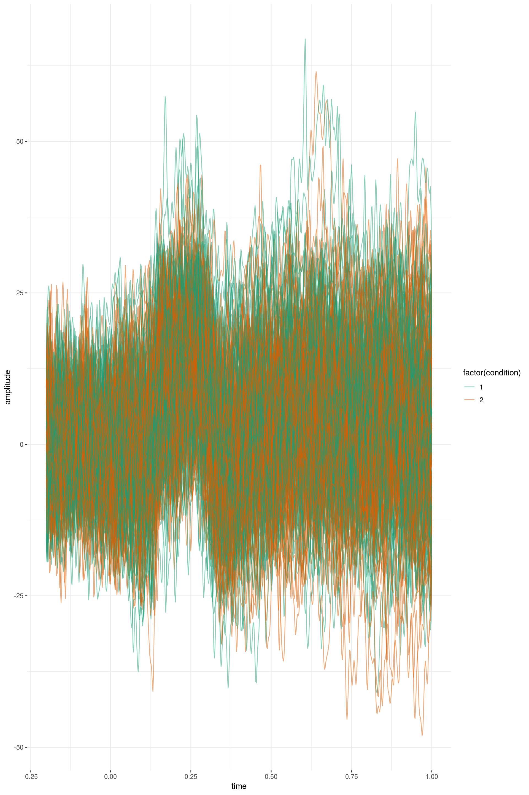
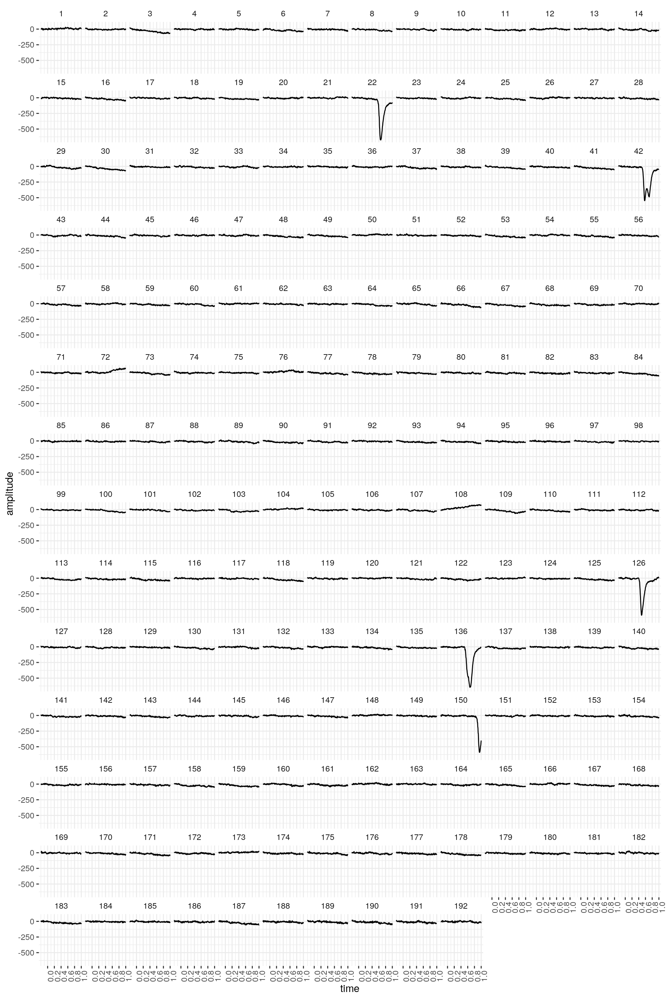
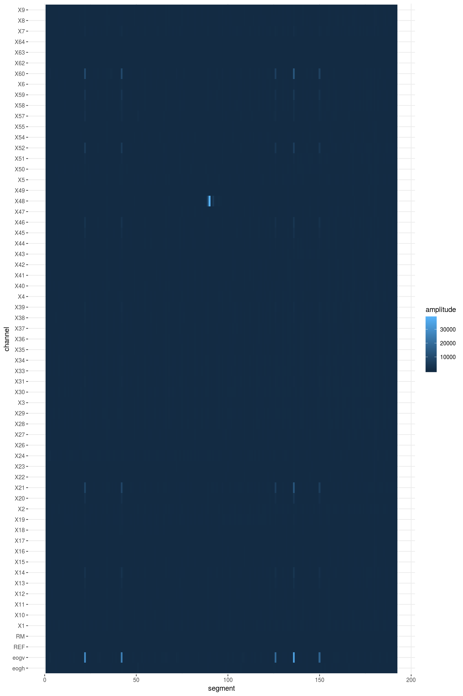
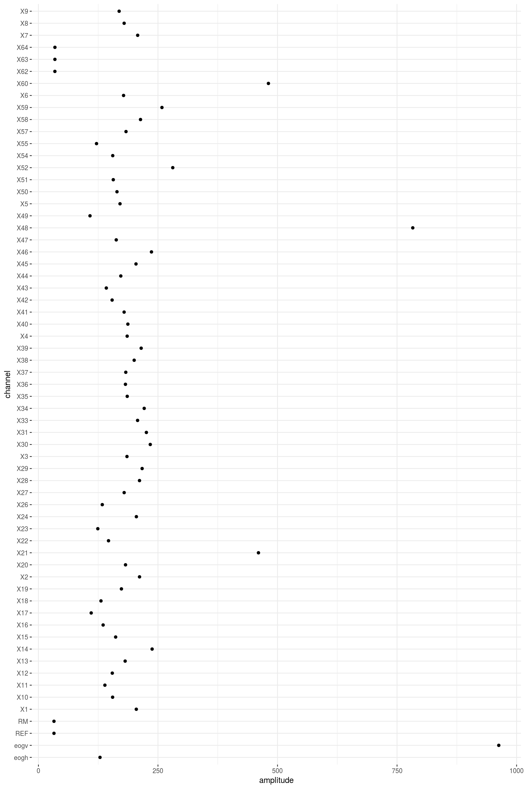
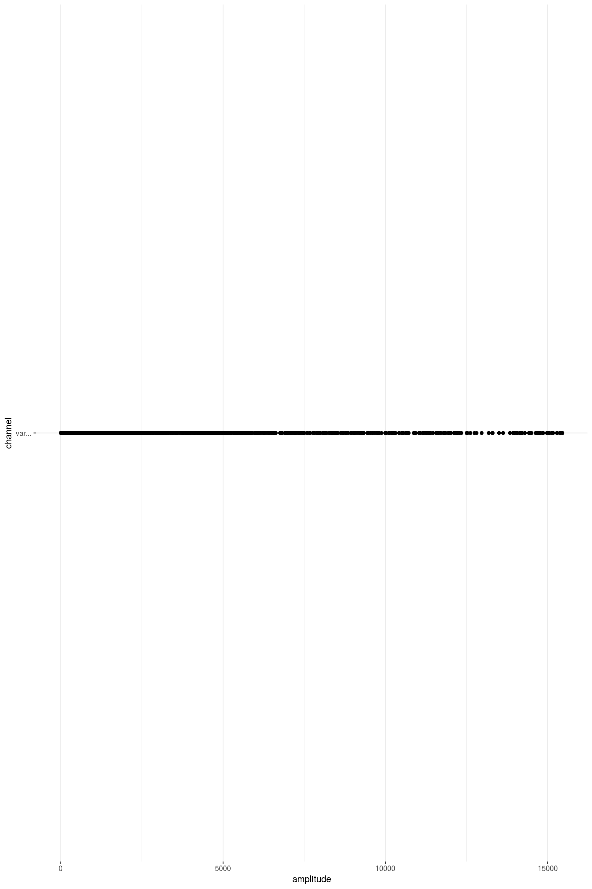
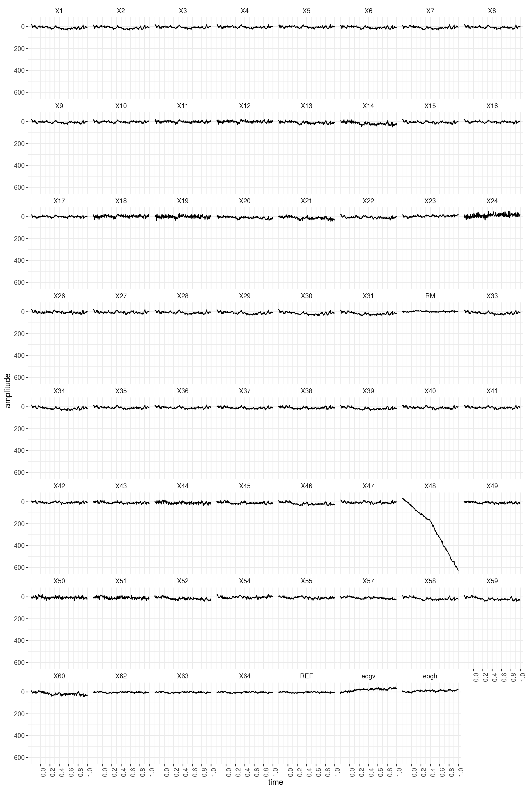
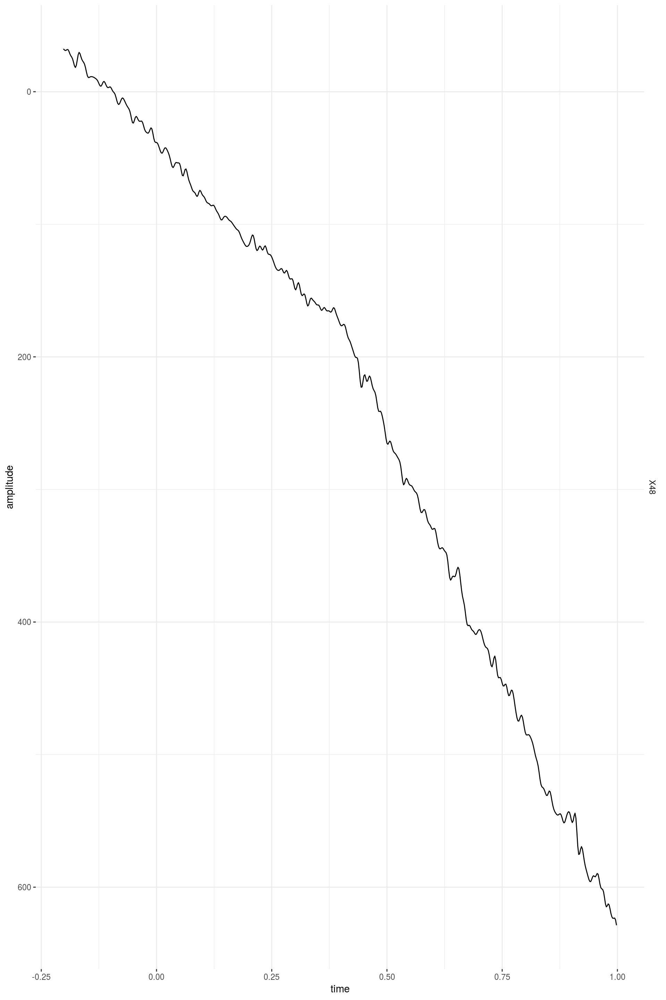
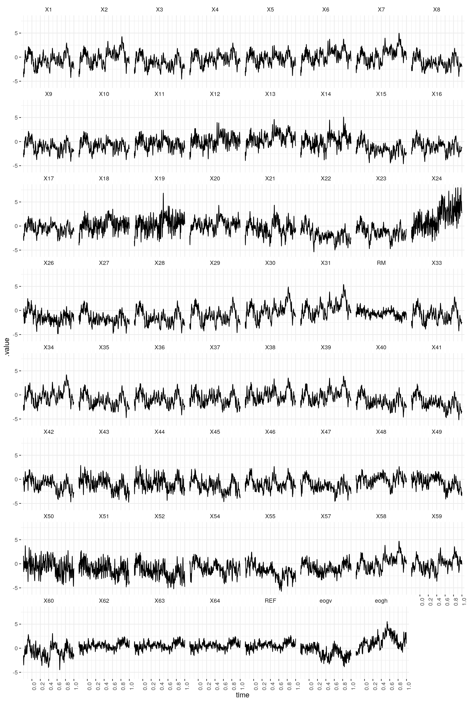

vignettes/preprocessing_erp.Rmd
preprocessing_erp.RmdThis tutorial is an adaptation (and some parts are a verbatim copy) of Fieldtrip’s Preprocessing - Reading continuous EEG data. Fieldtrip is a great MATLAB toolbox for MEG and EEG analysis. Here I show, how we would do a very similar analysis with eeguana. (No previous exposure Fieldtrip is needed to follow this vignette).
The preprocessing of data refers to the reading of the data, segmenting the data around interesting events such as triggers, temporal filtering, and optionally rereferencing.
There are largely two alternative approaches for preprocessing, which especially differ in the amount of memory required (and time). The first approach is to read all data from the file(s) into memory, apply filters, and subsequently cut the data into interesting segments. The second approach is to segment the data and then apply the filters to those segments only. This tutorial explains the second approach.
Preprocessing involves several steps including identifying individual trials from the dataset, filtering and artifact rejections. This tutorial covers how to identify trials using the trigger signal. Defining data segments of interest can be done according to a specified trigger channel or according to your own criteria.
The EEG dataset used in this script is available here. In the experiment, subjects made positive/negative or animal/human judgments on nouns. The nouns were either positive animals (puppy), negative animals (maggot), positive humans (princess), or negative humans (murderer). The nouns were presented visually (written words). The task cue (which judgment to make) was given with each word.
First we download the data:
download.file("ftp://ftp.fieldtriptoolbox.org/pub/fieldtrip/tutorial/preprocessing_erp/s04.eeg","s04.eeg")
download.file("ftp://ftp.fieldtriptoolbox.org/pub/fieldtrip/tutorial/preprocessing_erp/s04.vhdr","s04.vhdr")
download.file("ftp://ftp.fieldtriptoolbox.org/pub/fieldtrip/tutorial/preprocessing_erp/s04.vmrk","s04.vmrk")
download.file("ftp://ftp.fieldtriptoolbox.org/pub/fieldtrip/tutorial/preprocessing_erp/mpi_customized_acticap64.mat","mpi_customized_acticap64.mat")And then we load the eeguana package and read the the .vhdr fileinto memory. The function read_vhdr creates a list with data frames for the signal, events, segments information, and incorporates in its attributes generic EEG information.
The triggers were defined such that the trigger “S131” indicates condition 1 (positive-negative judgment) and “S132” indicates condition 2 (animal-human judgment).
events(data_judg)
#> .id type description .sample_0 .size .channel
#> 1: 1 New Segment <NA> 1 1 <NA>
#> 2: 1 Stimulus S111 51507 1 <NA>
#> 3: 1 Stimulus S 11 51514 1 <NA>
#> 4: 1 Stimulus S123 52035 1 <NA>
#> 5: 1 Stimulus S141 52541 1 <NA>
#> ---
#> 957: 1 Stimulus S112 1108150 1 <NA>
#> 958: 1 Stimulus S106 1108157 1 <NA>
#> 959: 1 Stimulus S122 1108169 1 <NA>
#> 960: 1 Stimulus S141 1108929 1 <NA>
#> 961: 1 Stimulus S132 1109582 1 <NA>However, we want the ERP based on the trigger “S141” that precedes any of these two triggers. We edit the events table (using dplyr functions) to indicate to which condition each trigger “S141” belongs, and then we can segment based on these conditions:
events(data_judg) <- mutate(events(data_judg),
condition = case_when(description == "S141" &
lead(description) == "S131" ~ 1 ,
description == "S141" &
lead(description) == "S132" ~ 2,
TRUE ~ 0))
data_judg_s <- data_judg %>% segment(condition %in% c(1,2), lim = c(-0.2,1))
#> # Total of 192 segments found.
#> # Object size in memory 57.4 Mb after segmentation.In this raw BrainVision dataset, the signal from all electrodes is monopolar and referenced to the left mastoid. We want the signal to be referenced to linked (left and right) mastoids. During the acquisition the ‘RM’ electrode (number 32) had been placed on the right mastoid. In order to re-reference the data (e.g. including also the right mastoid in the reference) we add implicit channel ‘REF’ to the channels (which represents the left mastoid) by creating a channel with channel_dbl() and filling it with zeros. The we re-reference the data using ‘REF’ and ‘RM’, the left and right mastoids respectively. Finally we apply a low-pass filter:
data_judg_s_p <- data_judg_s %>%
# By default from the beginning of each segment to 0:
ch_baseline() %>%
# The reference channel REF is filled with 0
mutate(REF = channel_dbl(0)) %>%
# All channels are references with REF
ch_rereference(RM, REF) %>%
# A low pass filter is applied
ch_filt_low_pass(100) We can have a look at one of the trials (the second one) of one channel (channel 11) using plot()

And we can do more advanced plotting using plot_gg (allowing us to display more information):
data_judg_s_p %>% select(X11) %>%
plot_gg() +
geom_line(aes(group = segment, color = factor(condition)), alpha = .5) 
In the BrainAmp acquisition system, all channels are measured relative to a common reference. For the horizontal EOG we will compute the potential difference between channels 57 and 25 (see the plot of the layout and the figure below). For the vertical EOG we will use channel 53 and channel “LEOG” which was placed below the subjects’ left eye.
data_judg_s_p <- data_judg_s_p %>%
mutate(eogv = ch_rereference(x = LEOG, X53),
eogh = ch_rereference(x = X25, X57)) %>%
# Unnecessary channels are removed
select(-LEOG, -X53, -X56, -X25) You can check the channel labels that are now present in the data:
channels_tbl(data_judg_s_p) %>% print(n=100)
#> # A tibble: 63 x 11
#> channel type .reference resolution unit radius theta phi .x .y
#> <chr> <chr> <chr> <dbl> <chr> <int> <int> <int> <dbl> <dbl>
#> 1 X1 Ch1 RM, REF 0.1 µV NA NA NA NA NA
#> 2 X2 Ch2 RM, REF 0.1 µV NA NA NA NA NA
#> 3 X3 Ch3 RM, REF 0.1 µV NA NA NA NA NA
#> 4 X4 Ch4 RM, REF 0.1 µV NA NA NA NA NA
#> 5 X5 Ch5 RM, REF 0.1 µV NA NA NA NA NA
#> 6 X6 Ch6 RM, REF 0.1 µV NA NA NA NA NA
#> 7 X7 Ch7 RM, REF 0.1 µV NA NA NA NA NA
#> 8 X8 Ch8 RM, REF 0.1 µV NA NA NA NA NA
#> 9 X9 Ch9 RM, REF 0.1 µV NA NA NA NA NA
#> 10 X10 Ch10 RM, REF 0.1 µV NA NA NA NA NA
#> 11 X11 Ch11 RM, REF 0.1 µV NA NA NA NA NA
#> 12 X12 Ch12 RM, REF 0.1 µV NA NA NA NA NA
#> 13 X13 Ch13 RM, REF 0.1 µV NA NA NA NA NA
#> 14 X14 Ch14 RM, REF 0.1 µV NA NA NA NA NA
#> 15 X15 Ch15 RM, REF 0.1 µV NA NA NA NA NA
#> 16 X16 Ch16 RM, REF 0.1 µV NA NA NA NA NA
#> 17 X17 Ch17 RM, REF 0.1 µV NA NA NA NA NA
#> 18 X18 Ch18 RM, REF 0.1 µV NA NA NA NA NA
#> 19 X19 Ch19 RM, REF 0.1 µV NA NA NA NA NA
#> 20 X20 Ch20 RM, REF 0.1 µV NA NA NA NA NA
#> 21 X21 Ch21 RM, REF 0.1 µV NA NA NA NA NA
#> 22 X22 Ch22 RM, REF 0.1 µV NA NA NA NA NA
#> 23 X23 Ch23 RM, REF 0.1 µV NA NA NA NA NA
#> 24 X24 Ch24 RM, REF 0.1 µV NA NA NA NA NA
#> 25 X26 Ch26 RM, REF 0.1 µV NA NA NA NA NA
#> 26 X27 Ch27 RM, REF 0.1 µV NA NA NA NA NA
#> 27 X28 Ch28 RM, REF 0.1 µV NA NA NA NA NA
#> 28 X29 Ch29 RM, REF 0.1 µV NA NA NA NA NA
#> 29 X30 Ch30 RM, REF 0.1 µV NA NA NA NA NA
#> 30 X31 Ch31 RM, REF 0.1 µV NA NA NA NA NA
#> 31 RM Ch32 RM, REF 0.1 µV NA NA NA NA NA
#> 32 X33 Ch33 RM, REF 0.1 µV NA NA NA NA NA
#> 33 X34 Ch34 RM, REF 0.1 µV NA NA NA NA NA
#> 34 X35 Ch35 RM, REF 0.1 µV NA NA NA NA NA
#> 35 X36 Ch36 RM, REF 0.1 µV NA NA NA NA NA
#> 36 X37 Ch37 RM, REF 0.1 µV NA NA NA NA NA
#> 37 X38 Ch38 RM, REF 0.1 µV NA NA NA NA NA
#> 38 X39 Ch39 RM, REF 0.1 µV NA NA NA NA NA
#> 39 X40 Ch40 RM, REF 0.1 µV NA NA NA NA NA
#> 40 X41 Ch41 RM, REF 0.1 µV NA NA NA NA NA
#> 41 X42 Ch42 RM, REF 0.1 µV NA NA NA NA NA
#> 42 X43 Ch43 RM, REF 0.1 µV NA NA NA NA NA
#> 43 X44 Ch44 RM, REF 0.1 µV NA NA NA NA NA
#> 44 X45 Ch45 RM, REF 0.1 µV NA NA NA NA NA
#> 45 X46 Ch46 RM, REF 0.1 µV NA NA NA NA NA
#> 46 X47 Ch47 RM, REF 0.1 µV NA NA NA NA NA
#> 47 X48 Ch48 RM, REF 0.1 µV NA NA NA NA NA
#> 48 X49 Ch49 RM, REF 0.1 µV NA NA NA NA NA
#> 49 X50 Ch50 RM, REF 0.1 µV NA NA NA NA NA
#> 50 X51 Ch51 RM, REF 0.1 µV NA NA NA NA NA
#> 51 X52 Ch52 RM, REF 0.1 µV NA NA NA NA NA
#> 52 X54 Ch54 RM, REF 0.1 µV NA NA NA NA NA
#> 53 X55 Ch55 RM, REF 0.1 µV NA NA NA NA NA
#> 54 X57 Ch57 RM, REF 0.1 µV NA NA NA NA NA
#> 55 X58 Ch58 RM, REF 0.1 µV NA NA NA NA NA
#> 56 X59 Ch59 RM, REF 0.1 µV NA NA NA NA NA
#> 57 X60 Ch60 RM, REF 0.1 µV NA NA NA NA NA
#> 58 X62 Ch62 RM, REF 0.1 µV NA NA NA NA NA
#> 59 X63 Ch63 RM, REF 0.1 µV NA NA NA NA NA
#> 60 X64 Ch64 RM, REF 0.1 µV NA NA NA NA NA
#> 61 REF <NA> RM, REF NA <NA> NA NA NA NA NA
#> 62 eogv Ch61 X53 0.1 µV NA NA NA NA NA
#> 63 eogh Ch25 X57 0.1 µV NA NA NA NA NA
#> # ... with 1 more variable: .z <dbl>A next important step of EEG preprocessing is detection (and rejection) of artifacts. We can plot EOG channel (’veog’, number 61) and confirm that the segments 22, 42, 126, 136 and 150 contain blinks.

The data can be also displayed in a different way :
data_judg_s_p %>% group_by(segment) %>% summarize_all_ch(var) %>%
plot_gg(x = segment, y= channel, fill = amplitude) +
geom_raster() 


You can also plot the signal in a specific trial with “Plot trial” box. Here, we have plotted the trial 90 - the one with the highest variance. We can see a drift in the channel 48. You can zoom in to this channel by dragging the mouse over it.


Rejection of trials based on visual inspection is somewhat arbitrary. Sometimes it is not easy to decide if a trial has to be rejected or not. In this exercise we suggest that you remove 8 trials with the highest variance (trial numbers 22, 42, 89, 90, 92, 126, 136 and 150). As you see, the trials with blinks that we saw in the “Channel” mode are among them. To complete the rejection press “Quit” button. You get the data_clean variable that will be used for subsequent analyses.
We now would like to compute the ERP’s for two conditions: positive-negative judgment and human-animal judgment. This is straightforward to do with group_by and summarize_*.
ERPs <- data_judg_s_p %>%
group_by(.sample_id, condition) %>%
summarize_all_ch(mean,na.rm=TRUE)
ERPs %>% plot_gg() +
geom_line(aes(color = factor(condition))) +
facet_wrap(~channel)
The following code allows you to look at the ERP difference waves.